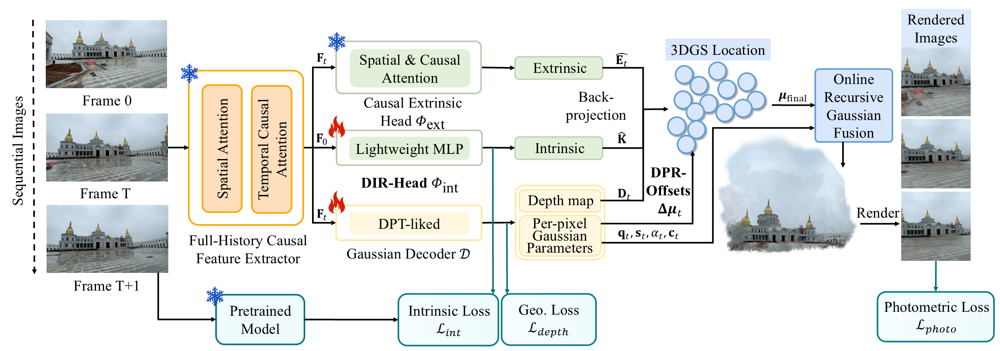

Abstract
Feed-forward 3D Gaussian Splatting (3DGS) enables efficient and high-fidelity novel view synthesis (NVS) from offline image sequences. However, achieving on-the-fly NVS from unposed images remains challenging: the system must reconstruct renderable 3D Gaussians as images arrive, without access to future observations. Although online feed-forward geometry methods have been developed for causal depth and point-cloud recovery, directly adapting them to NVS often leads to severe rendering artifacts because Gaussian-based rendering demands stricter multi-view consistency in primitive scale and pose-geometry alignment. Even minor deviations can accumulate under causal inference and visibly degrade rendering quality. To this end, we propose OF3GS, a feed-forward framework for efficient and high-quality on-the-fly NVS from sparse-view unposed images under causal constraints. We introduce two mechanisms for causal geometric stability: a Decoupled Intrinsic Recovery Head that mitigates cumulative camera-intrinsic bias and scene-scale jitter, and Dynamic Point Refinement Offsets that relax rigid unprojection to compensate for coupled pose-depth drift. Extensive experiments show that OF3GS outperforms online baselines and approaches offline feed-forward 3DGS methods under comparable sparse-input settings. It also remains memory-feasible with denser inputs.
Method

The pipeline uses causal feature extraction, decoupled camera recovery, Gaussian decoding with DPR-Offsets, and online recursive Gaussian fusion.
Processes frames sequentially with historical context and no future observations.
Decoupled intrinsic recovery reduces scale jitter during long-term streaming.
DPR-Offsets compensate for coupled pose-depth drift before Gaussian fusion.
Quantitative Results
| Dataset | Method | Online | Input Views: 5 | Input Views: 10 | Input Views: 64 | Input Views: 128 | ||||||||
|---|---|---|---|---|---|---|---|---|---|---|---|---|---|---|
| PSNR ↑ | SSIM ↑ | LPIPS ↓ | PSNR ↑ | SSIM ↑ | LPIPS ↓ | PSNR ↑ | SSIM ↑ | LPIPS ↓ | PSNR ↑ | SSIM ↑ | LPIPS ↓ | |||
| DL3DV-140 | FLARE | No | 13.984 | 0.580 | 0.420 | 13.720 | 0.610 | 0.422 | OOM | OOM | OOM | OOM | OOM | OOM |
| AnySplat | No | 19.139 | 0.577 | 0.388 | 18.268 | 0.563 | 0.422 | OOM | OOM | OOM | OOM | OOM | OOM | |
| WorldMirror | No | 21.559 | 0.673 | 0.285 | 20.503 | 0.685 | 0.320 | OOM | OOM | OOM | OOM | OOM | OOM | |
| OnTheFly-NVS | Yes | 21.030 | 0.644 | 0.325 | 19.470 | 0.612 | 0.393 | 18.478 | 0.610 | 0.455 | 17.259 | 0.566 | 0.424 | |
| SVGGT+GS | Yes | 19.726 | 0.599 | 0.338 | 17.614 | 0.532 | 0.443 | 16.132 | 0.467 | 0.535 | 15.129 | 0.486 | 0.514 | |
| OF3GS | Yes | 21.884 | 0.688 | 0.273 | 19.952 | 0.629 | 0.373 | 17.190 | 0.558 | 0.485 | 16.377 | 0.530 | 0.461 | |
| RE10K | FLARE | No | 13.485 | 0.262 | 0.670 | 13.244 | 0.263 | 0.676 | OOM | OOM | OOM | OOM | OOM | OOM |
| AnySplat | No | 23.034 | 0.753 | 0.251 | 22.189 | 0.752 | 0.288 | OOM | OOM | OOM | OOM | OOM | OOM | |
| WorldMirror | No | 25.419 | 0.820 | 0.203 | 25.158 | 0.828 | 0.216 | OOM | OOM | OOM | OOM | OOM | OOM | |
| OnTheFly-NVS | Yes | 20.829 | 0.815 | 0.290 | 22.881 | 0.759 | 0.329 | 20.985 | 0.767 | 0.303 | 20.071 | 0.725 | 0.342 | |
| SVGGT+GS | Yes | 23.767 | 0.776 | 0.234 | 22.427 | 0.742 | 0.283 | 19.431 | 0.698 | 0.323 | 19.245 | 0.675 | 0.354 | |
| OF3GS | Yes | 25.797 | 0.833 | 0.200 | 24.536 | 0.801 | 0.241 | 21.562 | 0.749 | 0.297 | 20.598 | 0.732 | 0.322 | |
| NYUv2 | FLARE | No | 14.643 | 0.505 | 0.619 | 14.598 | 0.504 | 0.622 | OOM | OOM | OOM | OOM | OOM | OOM |
| AnySplat | No | 22.047 | 0.648 | 0.319 | 22.024 | 0.660 | 0.334 | OOM | OOM | OOM | OOM | OOM | OOM | |
| WorldMirror | No | 24.750 | 0.713 | 0.303 | 24.212 | 0.694 | 0.297 | OOM | OOM | OOM | OOM | OOM | OOM | |
| OnTheFly-NVS | Yes | 20.875 | 0.635 | 0.376 | 22.515 | 0.629 | 0.323 | 23.174 | 0.679 | 0.352 | 21.454 | 0.690 | 0.351 | |
| SVGGT+GS | Yes | 22.892 | 0.674 | 0.318 | 21.413 | 0.633 | 0.331 | 19.246 | 0.598 | 0.385 | 18.385 | 0.576 | 0.401 | |
| OF3GS | Yes | 24.875 | 0.717 | 0.291 | 23.215 | 0.684 | 0.307 | 21.253 | 0.652 | 0.361 | 20.427 | 0.632 | 0.382 | |
OF3GS is evaluated under strict online constraints and remains scalable when offline feed-forward baselines run out of memory. Best and second-best results are highlighted in red and yellow, respectively.
Qualitative Results

Qualitative comparison on DL3DV-140, RE10K, and unseen NYUv2. OF3GS produces high-quality novel view renderings while preserving fine structural details.
Video Stabilization


Once a causal Gaussian representation is available, OF3GS can render stabilized views along smoothed camera trajectories.
BibTeX
@article{chen2026of3gs,
title = {OF3GS: On-the-Fly Feed-Forward 3D Gaussian Splatting from Unposed Images},
author = {Chen, Ruiyang and Li, Feiran and Zhou, Chu and Li, Zonglin and Ma, Zhanyu and Guo, Heng},
journal = {arXiv preprint arXiv:2606.03254},
year = {2026}
}